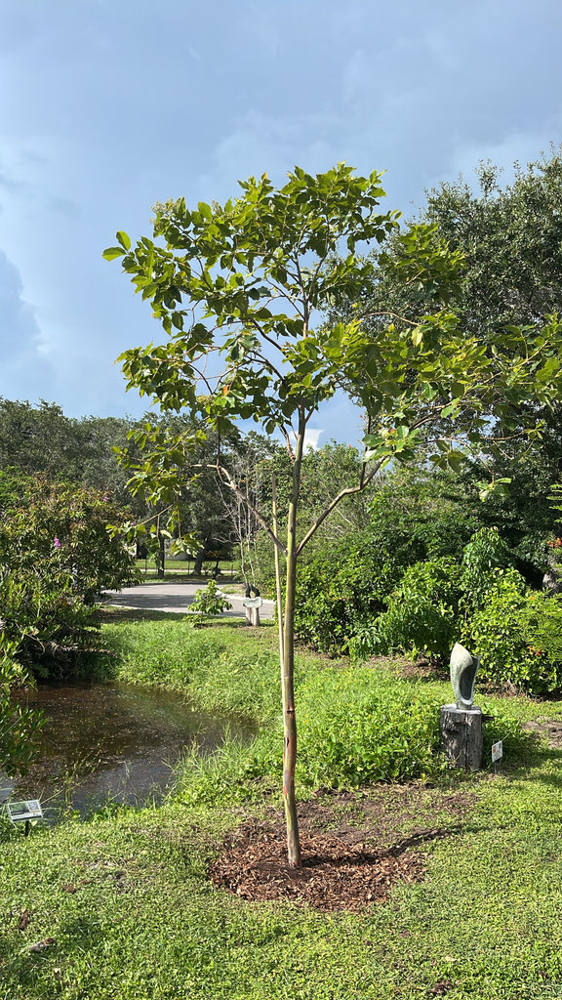

- The bark is not dyed or treated. Every color on that trunk follows a predictable sequence: the outer bark peels away to reveal bright green inner bark, which then shifts through blue and purple, deepens into orange and red, and finally fades to brown — at which point the cycle starts over. Different patches are always at different stages, which is why the whole trunk reads as a mosaic.
- Of the roughly 900 species in the genus Eucalyptus, almost all are native to Australia. The Rainbow Eucalyptus is one of only a handful of exceptions — native not to Australia but to the tropical rainforests of Southeast Asia and the Pacific.
- It is the only eucalyptus species whose native range extends into the Northern Hemisphere. Every other member of this enormous genus is found naturally south of the equator.
- Most people picture eucalyptus as a dry-climate Australian tree — and almost all of them are. This one is a genuine rainforest species, growing naturally in the high-rainfall island forests of the Philippines, Indonesia, and Papua New Guinea. It is almost counterintuitive in the context of its own genus.
- Its most famous commercial product is white paper. Plantations of Rainbow Eucalyptus have been producing pulpwood across the tropics for about a century, and the same extraordinary growth rate that makes it striking in a park has made it commercially important for pulp worldwide.
The Rainbow Eucalyptus is native to the tropical rainforests of the Philippines, Indonesia, and Papua New Guinea — specifically the islands of Mindanao, Seram, Sulawesi, New Guinea, and New Britain. The only part of its native range north of the equator is Mindanao, making it the sole Northern Hemisphere member of the species in the wild.
It grows in high-rainfall lowland and lower montane forests, often along rivers and on disturbed volcanic soils, at elevations below roughly 6,000 feet.
It is the only eucalyptus species native to the Northern Hemisphere and the only one naturally adapted to rainforest habitats — a striking exception in a genus that is almost entirely Australian and associated with drier climates.
It was introduced to Florida cultivation as an ornamental and has been grown here for decades, appreciated for its extraordinary bark and fast growth in South Florida's frost-free zones.
- The species epithet deglupta means 'peeled' in Latin — a straightforward description of the tree's defining habit. The bark sheds in long, narrow strips throughout the tree's life, a continuous process rather than a seasonal one. Because patches across the trunk are always at different points in their color cycle, the trunk is continuously changing.
- The science behind the colors is not fully resolved, but the broad picture is this: the freshly exposed inner bark is green because it contains chlorophyll.
- As that surface ages and its chemistry changes, tannins accumulate in the surface cells and the chlorophyll beneath declines — and the interplay of those shifts appears to drive the progression from green through blue and purple and into the warm reds and oranges before the bark browns and eventually peels.
- Despite being the most visually flamboyant tree in the eucalyptus genus, the Rainbow Eucalyptus produces an unusually pale, low-resin wood — which is precisely what makes it ideal for pulping into bright white paper.
- Pantropical plantations have been growing it commercially for pulpwood since the early twentieth century, and it is considered one of the fastest-growing large trees in the world under ideal tropical conditions.
The fluffy white flower clusters are visited actively by honey bees and native bees for nectar. In its native island forests, the tree also provides canopy structure and foraging habitat for birds and small mammals.
In Florida cultivation the picture is more modest. The tree has no co-evolutionary relationship with local butterflies or moths and does not function as a larval host. Its value here is primarily as a nectar source for generalist bees and as large-canopy shelter. Visitors looking for Florida's best butterfly and pollinator habitat will find it among the park's native plantings.
Propagation is by seed. The tree produces small woody capsules containing several tiny seeds, and flowering can occur at almost any time of year in warm, humid conditions. It does not sucker or spread clonally.
Small and individually not showy — clusters of fluffy white to pale cream stamens on short stalks near the branch tips. The effect in mass is attractive and fragrant, and bees find them readily. Flowering can occur sporadically through the warmer months in South Florida.
Small, woody, hemispherical capsules roughly 3 to 5 mm across with 3 or 4 valves, each containing several tiny brown seeds. The fruits are inconspicuous and not ornamentally significant.
Arranged in opposite pairs on the stem, broadly lance-shaped to oval, dark green, and 3 to 6 inches long on a short petiole. New growth often emerges with a bronze or coppery flush before maturing to green. The leaves of this species are notably less aromatic than most eucalypts.
The trunk is straight, tall, and develops buttresses at the base in old age. The bark is the defining feature: smooth, continuously shedding in strips to reveal an ever-changing mosaic of green, blue, purple, orange, and red. Branchlets are roughly square in cross section with narrow wings at the corners — a useful identification detail up close.
The trunk is unmistakable — look for the patchwork of colors at different stages of the cycle, from bright chartreuse green on freshly exposed bark to blue-purple and then warm orange and rusty red as the same patches age. If it has rained recently, the newly exposed green patches will be especially saturated; a wet trunk shows the full spectrum at its most vivid.
Lean in close and you can often see the brown outer bark still lifting away at the edges of a fresh patch. Look at the branchlets for the subtle square cross section with winged corners. If the tree is in bloom, look for the small pom-pom clusters of white stamens near the branch tips.
The leaves contain eucalyptus essential oils that can cause digestive upset, drooling, and lethargy if ingested in quantity by dogs, cats, or people — so keep curious pets from chewing on fallen leaves or branchlets, and contact your veterinarian or the ASPCA Animal Poison Control Center at (888) 426-4435 if a pet eats any.
In normal landscape contact the tree is harmless: no significant skin irritation, no toxic sap. Nobody eats this tree intentionally, and casual contact poses no concern.
This species is frost-sensitive — more so than almost any other eucalyptus, and generally rated for USDA Zones 10–11. It does not tolerate freezing temperatures well, and how much cold an individual tree can survive depends substantially on its size and age, the duration of the freeze, wind exposure, and site conditions.
An established tree with substantial trunk mass handles brief cold snaps considerably better than a newly planted sapling, which helps explain why a well-rooted specimen can survive a winter dip that would kill a young tree outright.
Plantation foresters consider the Rainbow Eucalyptus one of the fastest-growing trees in the world. That growth rate — which can be extraordinary in a true tropical climate — gives some context for just how quickly this specimen has reached its current size at Palma Sola Botanical Park.

- © Franky McArthur (CC-BY-NC), via iNaturalist